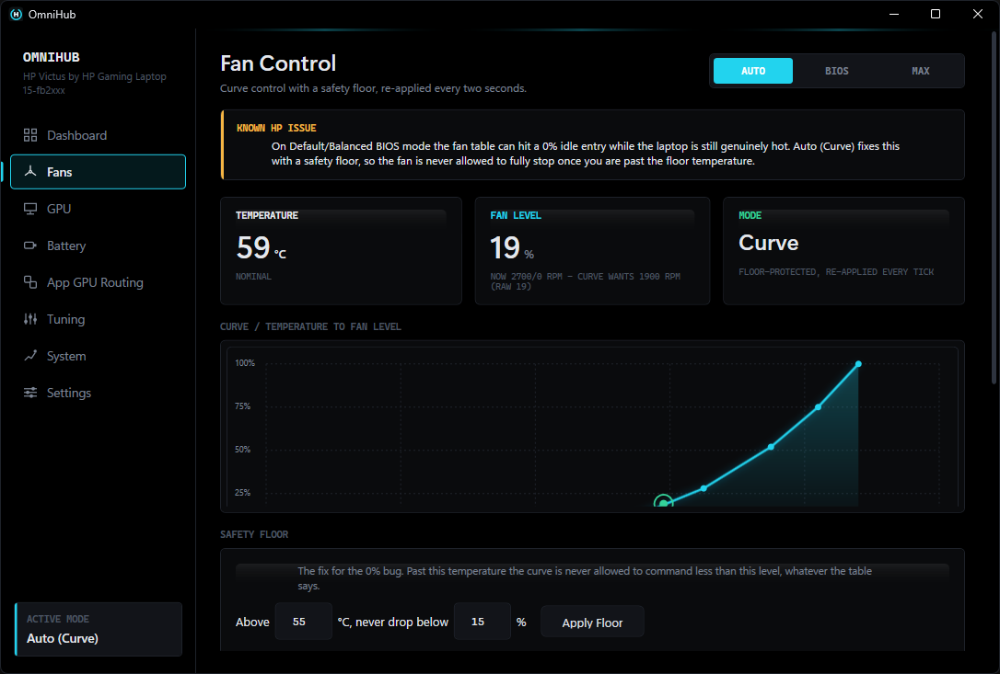
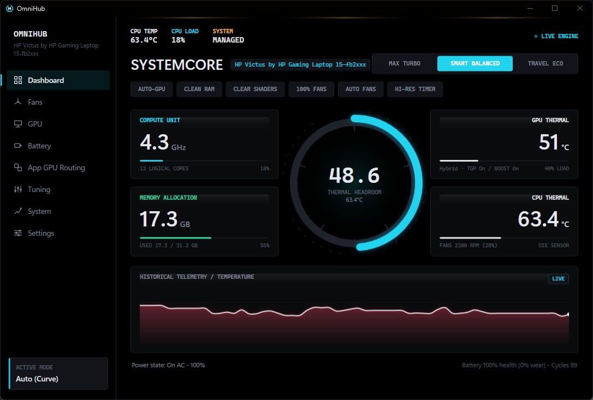

A replacement for Omen Gaming Hub. Fan curve control with a safety floor, GPU power and
mode, and AMD CPU tuning — through the same hpqBIntM BIOS interface the
vendor's own software uses. Every write is read back; nothing is estimated.
Unsigned build — SmartScreen will warn. SHA-256 below.
On some HP Omen and Victus laptops, the Default/Balanced BIOS fan table contains a 0% idle entry that can be reached while the machine is still genuinely hot. The fan stops. Nothing brings it back until the next threshold is crossed, and the heat has nowhere to go in the meantime.
OmniHub's Auto (Curve) mode adds a floor: past a temperature you choose, 0% stops being a value the curve is permitted to return, whatever the stock table asks for. The curve is re-applied every two seconds, because the firmware does not stop trying.

Six areas of control, and one rule running through all of them: a value the hardware did not report is shown as unavailable, never as a plausible number standing in for it.
| Area | What you get |
|---|---|
| Fans | An editable temperature-to-level curve, a safety floor that overrides the stock 0 % entry, a manual calibration sweep to find your own chassis’s raw band, and a Max mode. |
| GPU power | Custom TGP and Dynamic Boost as separate switches, GPU mode, and the ceiling re-asserted on a timer because the firmware takes it back. |
| CPU tuning | Sustained and boost power limits, thermal limit, and a per-knob enable, so a limit you have not set is never written. |
| Adaptive tuning | Moves the sustained power limit within a range you set, steering on temperature and demand together. |
| Measurement | A repeatable load test with saved runs, the five-way bottleneck table, per-phase poll timing, and a thermal log. |
| Windows | Power plans, timer resolution, MMCSS, process priority, and per-application GPU routing. |
A controller watching temperature by itself has a failure mode that reads as success: an idle machine is cool, so the limit goes up, which is harmless right up until the limit is high enough that the idle machine warms to the target and stays there. The temperature reading says the controller is working. Version 1.1.0 shipped exactly that.
The direction is now a function of three things — package temperature, the limit in force, and how much the processor is actually drawing against it. A cool machine that is not asking for power gets none, because there is nothing there to give it.
CPU and GPU are cooled by the same heatpipe but were tuned as independent knobs, so a GPU-bound game left the CPU holding a sustained limit it was not using while the package sat at its thermal target. The CPU yields when the GPU is busy and the package has reached target. Both conditions are required — a busy GPU on a cool machine is not competing for anything.
Version 1.1.1 compiled, passed every test, and stopped its own adaptive controller within seconds of launch. Nothing in the application could tell you that, and a ninety-second look at the temperature readout could not either. The Diagnostics tab pins every core for a duration you choose and records temperature, package power, CPU clock and fan speed, then reports median, p90, max and the clock floor — the figure that moves when sustained behaviour does. Runs are saved to disk, so two builds can be compared instead of described.
Five constraints, each as a fraction of its own limit: sustained power, boost power, EDC, TDC and temperature. Sitting at 99 % of core current and 60 % of power says plainly that raising the power limit will change nothing — which no single figure on the page could say. Without an SMU the whole table is hidden rather than filled in with an estimate.
OmniHub starts and runs on any Windows laptop. What it can drive depends on the interfaces your machine exposes. Controls the hardware cannot support are disabled and named, never left live and silently ignored.
| Capability | Requires | Status |
|---|---|---|
| Temperature, load, clocks, memory, battery health | ACPI + WMI | ✓ Supported |
| Power plans, scheduling, MMCSS, timer resolution, process priority | Windows | ✓ Supported |
| GPU name and 3D utilisation | Win32_VideoController + engine counters | ✓ Supported |
| GPU temperature, power draw, clock | nvidia-smi (NVIDIA driver) | ✓ Supported |
| CPU power limits, thermal limit, curve optimizer | AMD SMU via PawnIO driver | ⚠ Requires PawnIO |
| Fan curve, safety floor, GPU TGP unlock, BIOS power limits | HP hpqBIntM | ✓ Supported |
Lenovo, Dell and ASUS each expose a completely different ACPI/WMI interface, and there is no cross-vendor standard. The vendor layer sits behind a single availability check so another backend can slot in beside the HP one — but none ships unverified, because untested code that writes to unknown ACPI methods on someone else's laptop should not exist.
Captured on 1.1.0, on the machine every measurement in the next section came from. The sidebar was regrouped in 1.2.0 — nine destinations became seven — so the navigation differs from the current build. The readouts do not.

What came back when the tool talked to firmware — including where the firmware fought it.
| Measurement | Result |
|---|---|
| Average die temperature, SMU thermal limit 85 °C → 80 °C | 82.8 → 72 °C |
| GPU ceiling, Custom TGP + Dynamic Boost both enabled | 60 → 75 W |
| Time before firmware silently reverts the power unlock | ≈ 90 s |
| Unlock retained by a 5 s re-assert | 6 / 8 samples |
| OmniHub's own CPU use | 0.3 – 1.1 % |
| Resident memory | ≈ 200 MB |
| Launch to first hardware reading | 2.45 s |
HP exposes Custom TGP and Dynamic Boost as two undocumented switches. Sweeping all four combinations and reading sustained power back gives +5 W and +10 W respectively — and they stack. Reaching the card's 75 W maximum requires both.
| Custom TGP | Dynamic Boost | Sustained |
|---|---|---|
| off | off | 60 W |
| on | off | 65 W |
| off | on | 70 W |
| on | on | 75 W |
No abstraction invented for a landing page. These are the same interfaces OmenMon, OmenCore and Omen Gaming Hub itself use.
| Subsystem | Detail |
|---|---|
| BIOS control | root\wmi · hpqBIntM · ACPI\PNP0C14\0_0 |
| Fan level encoding | raw × 100 = RPM; measured band 10–56 on board 8C2F |
| Per-model fan band | profiles\<baseboard>.json |
| Load-test runs | %AppData%\OmniHub\logs\loadtest-*.csv |
| Tachometer readback | not exposed by this interface |
| Die temperature | THM_TCON_CUR_TMP 0x00059800 · 0.125 °C |
| Ring-0 access | PawnIO (signed, optional) |
| Settings | %AppData%\OmniHub\settings.json |
Before trusting curve control on a model nobody has confirmed, run the probe from an elevated terminal. It prints what the BIOS returns with nothing interpreted on top.
# elevated terminal OmniHub.exe -Probe === OmniHub Hardware Probe === Manufacturer … Product … Baseboard … Fan count … Fan types … hex bytes Fan levels … hex bytes Fan table (32B) … hex bytes Temperature … C (via ACPI thermal zones, not hpqBIntM) Max fan active … Throttling … GPU mode … GPU power …
Field layout only — the values are whatever your BIOS returns, and no sample output is reproduced here because a plausible-looking one would be indistinguishable from an invented one.
SHA-256 of OmniHub-1.2.0-win-x64.zip, built from commit e939480:
b42d0c8962e59ee45c1f41da2951b8403dcd3534937c41450b263667484d18a2
Get-FileHash .\OmniHub-1.2.0-win-x64.zip -Algorithm SHA256
This checksum is written by hand at release time and belongs to the version named above. Every release publishes its own on its release page, which is the one to check against if the download button has since moved to a newer build.
OmniHub.exe and accept the UAC prompt. Elevation is not
optional — the WMI session requires it and the SMU driver refuses unelevated
callers.winget install namazso.PawnIO. No restart needed; the app retries
every ten seconds.schtasks’ command-line form cannot express either — so OmniHub does
not start at sign-in while unplugged, and Task Scheduler terminates it the moment the
charger comes out. That termination is a hard kill: the fan controller never reaches its
shutdown path and never hands control back to the BIOS, which can leave the fans pinned at
whatever was last commanded. Until the next release, open the task in Task Scheduler and
clear both boxes under Conditions → Power. Fixed on
main.
winget install Microsoft.DotNet.SDK.10 git clone https://github.com/Vomitted/OmniHub.git cd OmniHub dotnet build OmniHub.slnx -c Release
Install the current SDK, not 8.0 — the solution uses the newer
.slnx format the .NET 8 SDK cannot parse. It still builds the
net8.0 target.
The application checks for new releases itself: Settings → Updates shows the installed version, the notes for anything newer, and downloads it with progress. It stops at revealing the file rather than unpacking over the running install — OmniHub holds the fan service and runs elevated, and replacing its own binary underneath itself to save one manual extract is not a trade worth making here.
Read live from the published releases, which is the same list the application's Settings tab reads. There is no separate feed to fall out of date. Full history in CHANGELOG.md.
Loading releases…